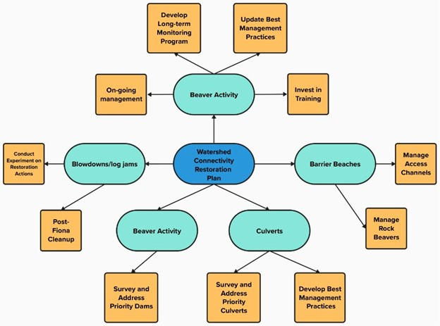

| Structure-specific |
|---|
| Pursue funding opportunities for coastal engineer survey at Bear River |
| Bi-weekly monitor the access channel at Bear River |
| Ongoing monitoring of Hay River dam culvert for potential blockages at Hay River |
| Bi-weekly monitor the access channel at Hay River |
| Discuss potential solutions to address temperature barrier to salmon upstream of Larkins Pond that was raised during February 2024 workshop |
| Complete follow up barrier assessment in high flow conditions on Stream Crossing 2 – North Lake Creek |
| Commission engineering designs to remove/replace barrier for Old Mill Creek Bridge |
| Address Fiona impacts – clear larger structures that hold back debris and sediment; clear access to these sites as well. |
| Beaver Management |
| Update report on beaver management |
| Write a brief cost/benefit analysis from DOT perspective of addressing beaver dam concerns related to instream structures |
| Establish and meet with Beaver Subcolony Committee to discuss a communications/advocacy strategy/approach |
| Species-specific |
| Discuss what data exists to refine eel accessibility, habitat, and connectivity models |
| Develop and implement smelt monitoring plan |
| Project Planning |
| Provide a list of top 10 structures to Paul Strain |
| Write WCRP components for online WCRP and dashboard |
| Update models based on workshop feedback and produce new ranked list of structures for assessment |
| Review ranked list and select 20-30 structures to prioritize for summer 2024 field assessment |
| Complete passability assessments for 20-30 structures |
| Review results of field assessments and decide on status and next step for each structure assessed |
| Update data on structure status and next steps in the model, and re-run model to update connectivity status estimate and structure ranks |
| Review updated structure ranks, select structures to assess in the field in 2025, and next steps for priority barriers |
Annual Progress Report
CWF and SAB hosted an annual partner workshop in February 2023. During this workshop, project partners discussed and mapped multiple strategies to address four major threats to connectivity in the seven watersheds (barrier beaches, beaver activity, blowdowns and blockages, and stream crossings). These strategies were mapped using methods from the Conservation Standards and are outlined in the Action Plan (Table 2/Figure 1). The goal for this exercise was to creatively brainstorm several strategies, while recognizing that not all will be achieved over the course of this project. An annual work plan was created to outline which subset of tasks would be carried out from March 2023 to March 2024 (Table 1). The work plan encompasses both assessments on unassessed structures or assessed structures that remain data deficient, actions to close knowledge gaps, and activities that advance actionable confirmed barriers.
In summer 2023, CWF, SAB, and ASF assessed 16 structures to determine their passability status for the three focal species. Informal assessments were completed at 10 sites and full barrier assessments were completed for six of them using the Nova Scotia Salmon Association’s Adopt-A-Stream protocol (Culvert Assessment for Fish Passage | NSSA Adopt A Stream). Field assessment results were reviewed by CWF, SAB, and ASF and updates were made to the connectivity models accordingly.
In addition to field assessments, two projects were completed in March 2023-2024:
The over widened, shallow barrier beach on Bear River was temporarily addressed by recreating a narrowed access channel and deeper thalweg with meandering rocks, with the goal of improving access for the 2023 fall Atlantic Salmon run.
A public information meeting was held in January 2024, to address concerns around Hay River barrier beach and upstream Johnston’s Pond. Presentations were made by Souris and Area Branch of the PEI Wildlife Federation, Ducks Unlimited, The PEI Department of Environment, Energy and Climate Action’s Forests, Fish and Wildlife Division, the University of Prince Edward Island Climate Lab and CBCL Coastal Engineer Vincent Leys. Topics included the history of the structures, ongoing management of the impoundment, and projected erosion and coastal processes under climate change.

Annual Work Plan
Action Plan
| Theme | Description | Lead | Participant(s) |
|---|---|---|---|
| Barrier Beaches | |||
| Strategy 1: Assess Passability Status | |||
| Contract a hydrogeomorphologist to assess passability of each barrier beach | SAB | CWF/ASF | |
| Ongoing management of barrier beach access channels | SAB | ||
| Beaver Activity | |||
| Strategy 1: On-going Management | |||
| 1a. Identify individual beaver dams that block fish passage outside of areas of high beaver activity | SAB | ||
| 1b. Notify DTI of areas with problematic, high beaver activity | SAB | ||
| Strategy 2: Develop long-term monitoring program | |||
| 2a. Develop long-term monitoring program (incl. more monitoring of estuaries) | SAB | ||
| Strategy 3: Update Best Management Practices | |||
| 3a. Update beaver management plan (and incorporate WCRP outcomes) | SAB | CWF/SAB | |
| Strategy 4: Invest in Training | |||
| 4a. Support the training and employment of beaver trappers | DTI | PEIWA/SAB | |
| Strategy 5: Complete Cost/Benefit Analysis | |||
| 5a. Conduct analysis to determine the costs of not managing beaver activity on infrastructure, to justify the benefits of paying to manage it. Incorporate the cost/benefit of province paying for beaver pelts to support harvesting | DTI | ||
| Blowdowns and Blockages | |||
| Strategy 1: Post-Fiona Clean Up | |||
| Clear larger structures that hold back debris and sediment and block fish passage | SAB | ||
| Strategy 2: Conduct Experiment | |||
| Conduct experiment to study effects of clearing or leaving blowdowns on fish passage and habitat conditions | SAB | ASF/DFO/Climate Lab at UPEI | |
| Stream crossings | |||
| Strategy 1: Survey and Address Priority Barriers | |||
| 1a. Identify priority structures for field assessments and conduct stream crossing assessments | CWF | SAB, ASF | |
| 1b. Identify priority structures to be addressed through removal, replacement, or installing fish passage | CWF | SAB, ASF | |
| 1c. Confirm availability of infrastructure resiliency funding | SAB | DTI | |
| Strategy 2: Develop Best Management Practices | |||
| 2a. Find or develop best management practices for stream crossing design relevant to PEI | PEIWA | ASF/CWF | |
| 2b. Advocate for BMPs with crossing designers, managers, and other key stakeholders | PEIWA | ASF/CWF |